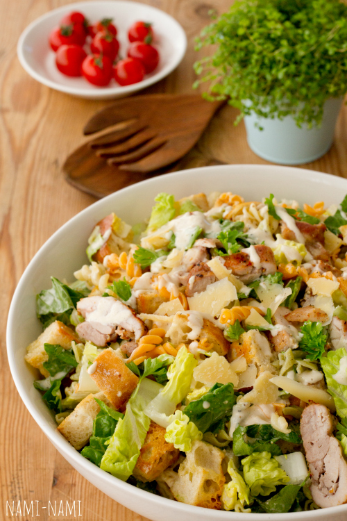
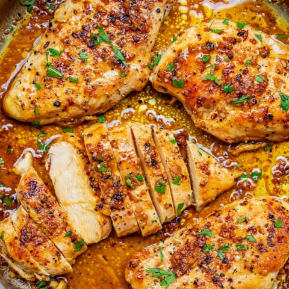
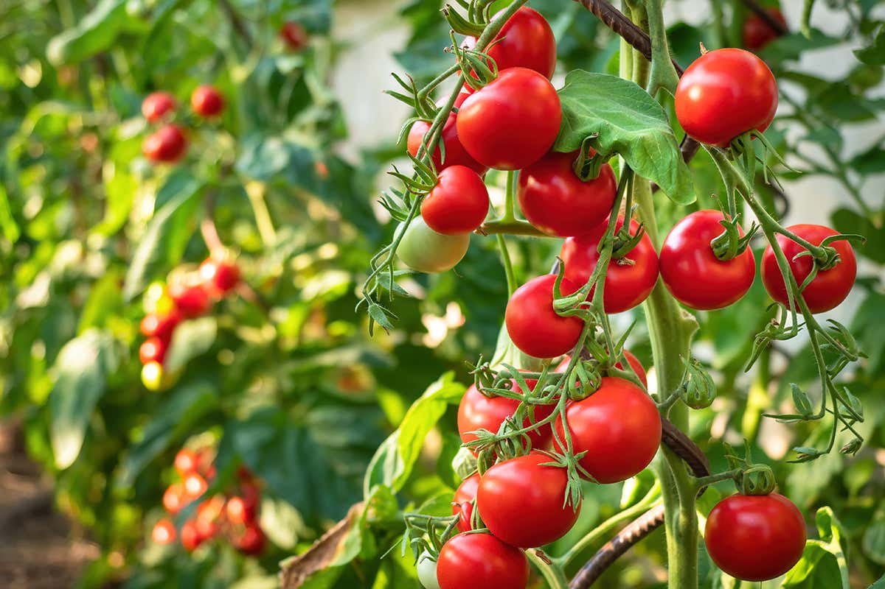

| Koostisosa |
Kogus |
| Kana filee |
100 gr |
| Sai |
1 lõik |
| Ceaseri kaste |
2 sl |
| Kirss tomat |
4 tk |
| Rooma salat |
6 lehte |
| Parmesani juust |
25 g |
|



|
- Pese kana kraani vee all, lisa soola ja piprat maitse peale. Kuumuta pann ja ära unusta õli. Küpseta kana kuni see saab valmis. Lõiga kuubikuteks.
- Pese salati lehed ja tomatit vee all, kuivata kuivatuspaberiga või puhta rätikuga. Ribi salati lehed kätetega ja lõika kirss tomatid pooleks.
- Võta kauss ja sega salati lehed ja tomatid koos kastmega.
- Pane üks saia tükk tosterisse või ahju sisse. Lase temale krõbedaks saada. Lõika kuubikuteks.
- Serveeri 3. punktis olev segu taldrikule, lisa saia tükkid, kana. Kõige viimasena lisa juust.
© Veronika Lebedeva, 2022